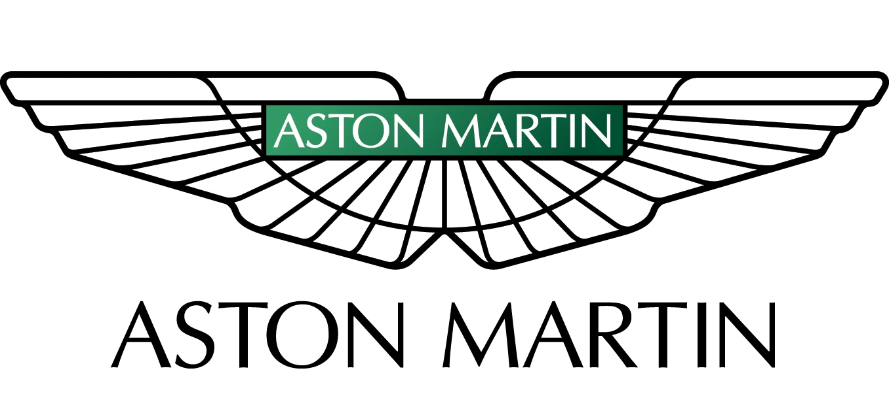

Scuderia Ferrari
El equipo más antiguo y exitoso de la F1. Conocido por su pasión, historia y sus icónicos autos rojos.
Titulos: 16 | Victorias: 256 | Vueltas rapidas: 260 | Poles: 249 | Podios: 813

Red Bull Racing
Equipo austriaco, dominante en la era híbrida, famoso por su innovación y por tener a Max Verstappen como piloto estrella.
Titulos: 6 | Victorias: 118 | Vueltas rapidas: 90 | Poles: 90 | Podios: 250

Mercedes-AMG
Equipo alemán, referente en tecnología y rendimiento, gran dominio en la última década.
Titulos: 8 | Victorias: 125 | Vueltas rapidas: 95 | Poles: 135 | Podios: 275

McLaren
Histórico equipo británico, famoso por su espíritu innovador y por formar jóvenes talentos.
Titulos: 8 | Victorias: 183 | Vueltas rapidas: 162 | Poles: 156 | Podios: 499

Titulos: 0 | Victorias: 0 | Vueltas rapidas: 1 | Poles: 0 | Podios: 9
Aston Martin
Equipo británico en crecimiento, con Fernando Alonso como referente.
Titulos: 0 | Victorias: 0 | Vueltas rapidas: 1 | Poles: 0 | Podios: 9
Alpine
Equipo francés, conocido por su historia y victorias sorpresivas.
Titulos: 2 | Victorias: 21 | Vueltas rapidas: 15 | Poles: 20 | Podios: 63

Williams
Equipo británico histórico, famoso por su ingeniería y grandes campeones.
Titulos: 9 | Victorias: 114 | Vueltas rapidas: 133 | Poles: 128 | Podios: 313
RB
Equipo filial de Red Bull, plataforma para jóvenes pilotos.
Titulos: 0 | Victorias: 1 | Vueltas rapidas: 3 | Poles: 0 | Podios: 5
Haas
Único equipo estadounidense, debutó en 2016 y busca consolidarse.
Titulos: 0 | Victorias: 0 | Vueltas rapidas: 2 | Poles: 0 | Podios: 2